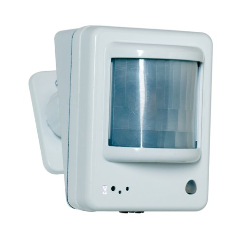
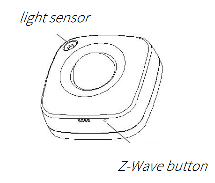

ZOOZ Z-Wave Plus 4-in-1 Sensor ZSE40 (motion/light/temperature/humidity)¶

Brief information¶
4 smart sensors in 1 compact device.
7 levels of motion sensitivity to choose from. 3 modes for motion / temp led indicator notifications
Built-in tamper protection. Low battery alerts.
Z-Wave Plus with improved 500 chip for faster and safer wireless communication
- NOTE! This product is not supported by most Z-Wave alarm panels such as ADT Pulse
or controllers such as Wink which do not support multi-level command class. Please check with your hub’s support to make sure this product will be recognized by their software correctly.
How to add to VENUS app¶

- 1. Activation
- Press “Add button” (button ‘+’) in app
- Press and release the Z-Wave button TWICE quickly
- Wait for VENUS scan & detect this device and inform in app
- 2. Reset then re-add
- Press “Add button” (button ‘+’) in app
- Press and release the Z-Wave button TWICE quickly (reset)
- Press and release the Z-Wave button TWICE quickly again (re-add)
- Wait for VENUS scan & detect this device and inform in app
How to add/remove associated device(s) to¶
To add associated device(s) to this sensor, below action is required:
- Add z-wave notified-devices (which will be associated to this sensor) to VENUS
- Select Associate button and then select notified-device(s) to add
- Press and release the Z-Wave button
- If successful, pop-up notification displays in VENUS app
To remove associated device(s) from this sensor, below action is required:
- Select Associate button and then select notified-device(s) to remove
- Press and release the Z-Wave button
- If successful, pop-up notification displays in VENUS app
Configuration description¶
- Temperature report type
Select tempertature type to report to controller
Available 0: Celcius 1: Fahraheit Default 0
- Huminity sensity
Huminity sensity value reported to controller
Available 1 ~ 50 (in percent) Default 10
- Light sensity
Light sensity value reported to controller
Available 1 ~ 50 (in percent) Default 10
- Motion sensity
Motion sensity value setting in this device
Available 1 ~ 7 (Motion sensity level, 1: very high - 7: very low) Default 4
- Motion time-out
Period of time to device clear motion state in order to ready to process new motion
Available 1 ~ 255 (in minutes) Default 3
- LED notification
Motion sensity value setting in this device
Available 1: LED indicator is turned off 2: temperature indicated with pulsing light. Motion indicated with flashing light 3: Temperature and motion indicated with flashing light. Default 3 LED indicator colors: - Green = under 60°F - Blue = 60°-75°F - Yellow = 75°-83°F - Purple = 83°-97°F - Red = over 97°F / motion detected / tamper switch triggered